BPV Verslag
Saxion XR Lab Enschede • Leroy Exel
Voorwoord
Voor je ligt mijn BPV verslag over mijn stage bij het Saxion XR Lab in Enschede. Ik loop hier sinds 2 februari 2026 stage voor mijn MBO-opleiding Software Development op het ROC van Twente.
In dit verslag vertel ik over het stagebedrijf en de vette projecten waar ik de afgelopen maanden aan heb gewerkt. Ook kijk ik goed terug op mijn eigen ontwikkeling als developer.
Het schrijven van dit verslag was een goed moment om eens te kijken wat ik allemaal heb geleerd, wat er goed ging en waar ik de komende tijd nog aan moet werken. Ik hoop dat dit verslag een goed en realistisch beeld geeft van mijn stageperiode.
Inleiding
Dit verslag laat zien hoe het er dagelijks aan toe gaat binnen het Saxion XR Lab en wat er allemaal komt kijken bij het maken van software in een serieuze omgeving.
Na de bedrijfsinformatie heb ik twee belangrijke BPV-taken helemaal uitgewerkt volgens de acht procesfasen van school: oriëntatie, definitie, ontwerp, keuze, voorbereiding, uitvoering, presentatie en evaluatie.
De twee taken die ik heb uitgewerkt zijn:
- Het fixen van een irritante medication fluid visuals bug in C++ voor de LUMC Department of Anaesthesiology Unreal Engine Showcase.
- De implementatie van het interactieve Sticky Notes notificatiesysteem binnen Unreal Engine voor het project Reintegration.
Daarnaast zit er een interactieve mini-game in dit verslag om de boel te simuleren. Los 5 binnenkomende runtime issues op om de rest van de procesfasen hieronder vrij te schakelen, of klik gewoon op skip.
Bedrijfsinformatie
Geschiedenis & Huidige Situatie
Het Saxion XR Lab zit in Enschede aan het Ariënsplein 1. Het lab is opgericht op 28 november 2019 door Matthijs van Veen, nadat hij in 2018 al begon met het idee omdat VR brillen steeds beter werden. Het is een gave werkomgeving waar studenten, docenten en professionals samenwerken aan projecten met Virtual Reality en interactieve media.
Producten & Klanten
In het lab bouwen we verschillende interactieve producten, zoals medische simulaties, Leerzame VR games en Moderne Prototypes. De klanten zijn vooral onderwijsinstellingen, de zorg en externe bedrijven. Een groot voorbeeld is onze samenwerking met het LUMC Department of Anaesthesiology, waar we VR simulaties voor maken.
Organisatie & Samenwerking
Binnen het lab werk ik samen met projectgenoten, andere stagiairs en medewerkers. Mijn begeleider is Bram Scholten. Bij hem kan ik altijd terecht voor vragen en ik lever mijn code ook bij hem in. De kwaliteitscontrole doen we via code reviews op GitLab en door alles goed te testen.
Gebruikte Software & Hardware
Personeel
Overzicht van het team binnen het Saxion XR Lab (18 personen in totaal, bestaande uit 9 vaste medewerkers en 9 actieve stagiairs)
Matthijs van Veen
Head of Saxion XR LabBram Scholten
Software Engineer / PraktijkopleiderAndreas
ArtistStefan Talman
Lab AdminTrim Vezvesja
Software EngineerMarloes Bekhuis
Game DesignerMirjam
Teacher / ResearcherRob Maas
Teacher / ResearcherDaniel Valente de Macedo
Teacher / ResearcherLeroy Exel
Stagiair Software EngineerNichita
Stagiair VFX / Software EngineerNikola
Stagiair Software EngineerBoldea
Stagiair Software EngineerConnor
Stagiair DesignerSlavena
Stagiair ArtistJulie
Stagiair DesignerDaniel
Stagiair ArtistGedas
Stagiair ArtistBPV-Taken(Minigame)
Dagelijkse Problemen (Minigame)
Voltooi de minigame om de taken te bekijken.
Fix medication fluid visuals
Een hardnekkige bug gefixt in C++ waarbij de vloeistof in de medicatiespuit helemaal uitrekte zodra je hem in de patiënt stak.
Sticky Notes System
Ontwerp en implementatie van een interactief, physics-gebaseerd notificatiesysteem binnen het project REINTEGRATION.
Een dag bij het XR Lab
Mijn werkdag bij het Saxion XR Lab begint rond 09:00 uur. Ik start direct mijn pc op, open GitFork en doe als eerste een git pull om de nieuwste updates en code van mijn projectgenoten binnen te halen.
Rond 10:00 uur sluit ik aan bij de gezamenlijke stand-up met het hele team. Hierin bespreken we kort wat we de dag ervoor hebben gedaan, zoals het oplossen van patiënt-spawning bugs, en wat we vandaag gaan oppakken, zoals het toevoegen van knoppen aan het host-menu. Openstaande taken beheren we in ClickUp.
De rest van de ochtend zit ik lekker in de flow te developen in Visual Studio en Unreal Engine. Dit varieert van het schrijven van objectgeoriënteerde C++ code tot het inrichten van NavMesh-bounds in de operatiekamer.
Om 12:00 uur neem ik een uurtje pauze om te lunchen en rust te nemen, waarna ik weer met veel energie en motivatie verder kan.
In de middag ben ik eigenlijk de hele tijd bezig met het uitwerken van mijn features. Tussendoor test ik de builds door de Meta Quest 3 op te zetten om te controleren of de controllers, haptische feedback en hand-tracking logica goed werken. Als er iets af is, pak ik in ClickUp/Jira meteen een nieuwe taak op.
Aan het einde van de middag zorg ik dat mijn code netjes is opgeruimd en voeg ik comments toe waar dat nodig is. Ik maak kleine, logische commits aan met een duidelijke omschrijving en push de boel naar mijn feature-branch op GitLab. Daarna lever ik het op aan Bram Scholten voor een code review.
Leerdoelen
Vier leerdoelen die ik heb opgesteld en uitgevoerd tijdens mijn stageperiode bij het Saxion XR Lab.
Het opzetten van een technische VR-omgeving in Unreal Engine 5 waarbij de basisfunctionaliteiten (headtracking en controller input) via de OpenXR standaard gewoon goed werken. Simpel in theorie maar er komt best wat bij kijken.
In plaats van een standaard Character Blueprint heb ik een eigen VR_Pawn gebouwd met physics zodat de handen niet door muren heen kunnen. De hiërarchie werkt via een Scene Component als nulpunt, een Camera gekoppeld aan de HMD, en twee Skeletal Mesh handen (links en rechts) die elk via een MotionController input binnenkrijgen. Per hand zit er een Empty Position en een Constraint die de hand naar die positie trekt met een vaste kracht.
Voor de besturing heb ik het Enhanced Input System gebruikt. Eerst Input Actions aangemaakt (bijv. IA_Movement), daarna een Input Mapping Context gekoppeld aan de fysieke knoppen zoals de Oculus Touch joystick, en ten slotte de Mapping Context geladen bij BeginPlay in de VR_Pawn Blueprint.
Om de handanimaties te laten werken terwijl de physics ook actief is, heb ik een Physics Asset aangemaakt voor beide handen. Aan elke vinger heb ik een vaste rotatie constraint toegevoegd met een kracht van 3000. Daarna werkte de animaties niet meer, dus dat loste ik op met Apply Physical Animation Below, waarbij ik de juiste kracht-instellingen heb geconfigureerd zodat de vingers de animaties netjes volgen maar toch physics-gedreven blijven.
- ✓Headtracking reageert direct op fysieke beweging van de headset.
- ✓Hand meshes volgen de controllers nauwkeurig.
- ✓Speler staat op de correcte hoogte ten opzichte van de virtuele vloer.
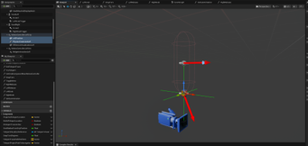
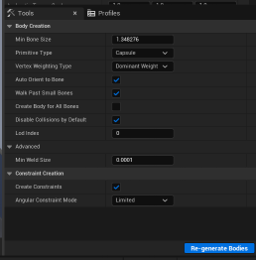
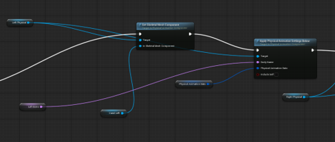
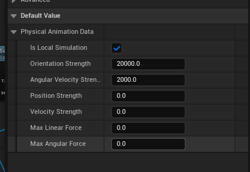
De VR-basis is stabiel en schaalbaar opgezet. Tracking is accuraat en het systeem is klaar voor verdere interactie-ontwikkeling.
De gebruiksvriendelijkheid van de VR-applicatie optimaliseren door feedbacksystemen te bouwen die de gebruiker sturen, duidelijkheid geven over interacties en motion sickness helpen verminderen. Goede UX in VR is echt een ding apart — je hebt geen muis-cursor of tooltips, dus alle feedback moet via de omgeving zelf komen.
Controllers trillen bij het oppakken of interacteren met objecten. Geïmplementeerd via Blueprint haptic events gekoppeld aan trigger volumes.
Objecten lichten op bij nabijheid. Bij de operatietafel verdwijnt de oude tafel met een effect zodra je op de knop drukt en verschijnt de nieuwe direct — zo weet de gebruiker dat er iets is veranderd.
Ademhalingsgeluiden via de stethoscoop om een bronchospasme te herkennen. De eerste beademing is zonder bronchospasme, daarna met — en dit is instelbaar. Geïmplementeerd in C++ voor optimale audiocontrole.
Ook in het Unity 2D project "2D Quantum Delta" geluidsfeedback geïmplementeerd: duidelijk onderscheid tussen een item in een slot plaatsen of in de prullenbak gooien. Items vallen ook zichtbaar op de juiste plek.
- ✓Minimaal twee feedbacksystemen geïmplementeerd en gedemonstreerd.
- ✓Gebruiker kan interacties uitvoeren zonder uitleg of hulp van buitenaf.
- ✓Feedback verwerkt in verbeterde versie na review met Bram.
Ik bouw een sticky notes systeem voor het project REINTEGRATION. De briefjes spawnen op een random positie op het dashboard-scherm zodra er een melding binnenkomt. De gebruiker kan ze oppakken met de VR-controllers, ermee gooien door de ruimte, en als zo'n briefje een hitbox van een muur raakt plakt ie er direct aan vast via een physics constraint.
Ik had dit leerdoel gepland voor 10 weken maar het liep wat uit omdat ik tussendoor ook bug fixes en features moest oppakken voor het LUMC project. Uiteindelijk toch netjes afgerond en opgeleverd met schone code en comments.
- ✓Briefjes spawnen vloeiend op random posities zonder overlap bugs.
- ✓Oppakken, gooien en plakken werkt stabiel in de VR Preview.
- ✓Geen clipping of rare glitches bij het raken van de hitbox.
- ✓Systeem is flexibel en herbruikbaar voor andere XR Lab projecten.
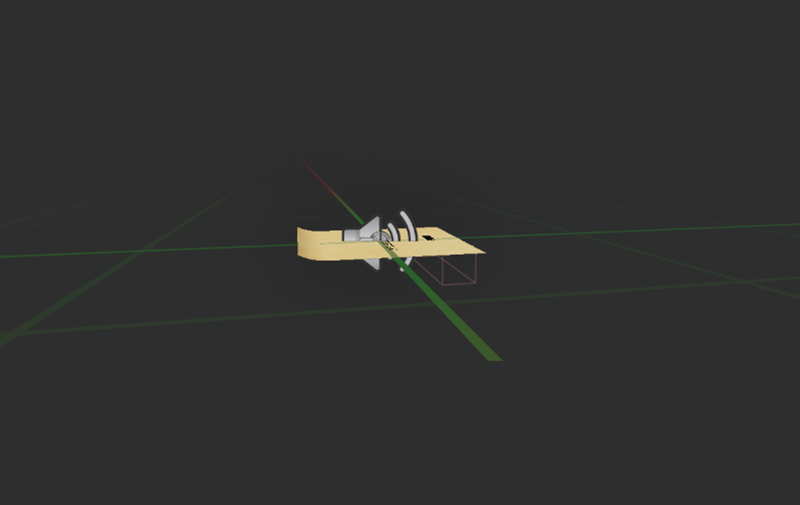
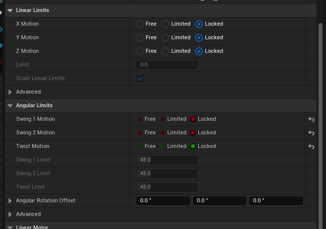
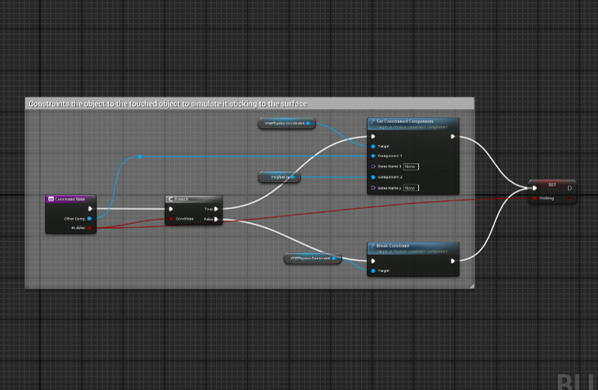
Binnen het project gebruiken we GitFork voor versiebeheer. Werkt vergelijkbaar met GitHub Desktop, waardoor iedereen aan hetzelfde project kan werken met zo min mogelijk conflicten. Mijn vaste routine:
"Added NavMesh bounds in OK_Room_FixedNavmesh. Copy NavMeshBoundsVolume in OK_Room_FixedNavmesh (with children), remove old NavMeshBoundsVolume and paste new one."
Als een taak klaar is maak ik een Merge Request aan op GitLab. Bram controleert die altijd voordat het in de develop branch komt.
Elke ochtend neem ik deel aan de gezamenlijke stand-up. Twee vragen: wat heb ik gisteren gedaan en wat ga ik vandaag doen. Simpel maar echt nuttig om het team op één lijn te houden. Voorbeeld: gisteren gewerkt aan een bug waarbij de patiënt niet wilde spawnen in de scène — vandaag een knop toevoegen aan het host-menu zodat de patiënt direct verbinding maakt met alle apparaten.
Taken beheren we in ClickUp. Nieuwe taken aanmaken, openstaande taken bijhouden, prioriteiten instellen en voortgang monitoren. Als er iets af is pak ik meteen de volgende taak op uit de backlog.
"Ik merk dat mijn begrip van Git-conflicten een stuk beter is geworden. Waar ik in week 1 nog moeite had met merges, weet ik nu hoe ik conflicten rustig oplos door zorgvuldig met branches te werken en te overleggen met collega's."
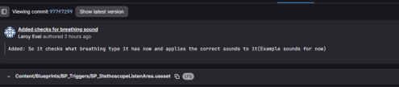
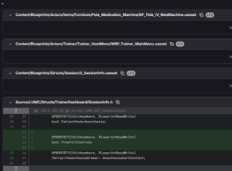
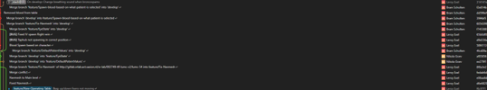
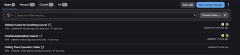
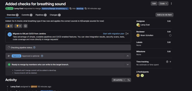
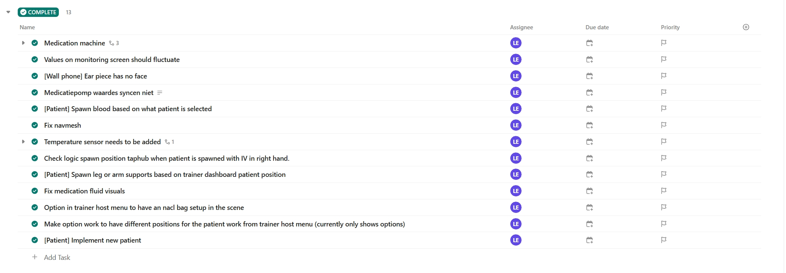
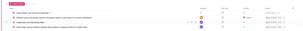
Conclusie
Sinds de start van mijn stage op 1 januari 2026 ben ik echt een stuk beter geworden als Software Developer. Door de projecten binnen het Saxion XR Lab heb ik goed geleerd hoe ik efficiënte C++ code schrijf en hoe ik complexe technische problemen oplos binnen een professioneel team.
Mijn leerdoelen waren vooral gericht op het zelfstandig structureren van grotere softwareprojecten en het goed toepassen van versiebeheer via professionele Git-workflows (zoals werken met branches en het voorkomen van merge conflicts). Door de intensieve praktijkervaring kan ik wel zeggen dat ik deze doelen succesvol heb behaald.
Reflectie
"Ik werk nu een stuk zelfstandiger, vind sneller de oorzaak van bugs en lever schone code op die voldoet aan professionele standaarden."
Als ik terugkijk op de afgelopen maanden, merk ik pas hoeveel ik ben gegroeid in mijn manier van werken. In het begin vond ik grote codebases soms best wel onoverzichtelijk en lastig te begrijpen. Nu pak ik een feature-verzoek op, breek het op in kleine sub-taken en bouw ik het stap voor stap op.
Mijn begrip van Git en merge-conflicten is ook flink verbeterd; complexe situaties in de repository los ik nu rustig op door nauwkeurig branch-beheer en overleg. Een belangrijk verbeterpunt is wel dat ik soms nog sneller aan de bel moet trekken: in plaats van te lang zelf te blijven zoeken naar een vage bug, leer ik nu sneller te sparren met Bram Scholten zodat het proces lekker doorloopt.
Slotwoord
Als laatste wil ik iedereen bedanken die mij heeft geholpen tijdens deze super leerzame stageperiode.
In het bijzonder wil ik mijn praktijkopleider Bram Scholten bedanken voor de goede begeleiding, de waardevolle feedback op mijn code en de ruimte die ik kreeg om mezelf te ontwikkelen binnen het Saxion XR Lab.
Videos/Foto's
Video's
Dit zijn videos/fotos door mij genomen in het lumc project.
Video voor de klant. starten met het moment dat ze zwaaien.
Video voor de klant. operatie kamer laten zien.
Video voor de klant. zien dat je samen werkt in de operatiekamer.
Laten zien dat de koelkast gevuld is met de benodigde spullen.
Laten zien dat de operatietafel beweegt met de knoppen.
Laten zien dat de bloedzak langzaam leegloopt.
Laten zien dat de lampen boven de operatietafel bewogen kunnen worden.
Laten zien dat alle laden openbaar zijn en gevuld zijn.
laten zien dat de beademing op de patient geplaatst kan worden.
Laten zien dat er inflatie in de luchtzakken is.
Laten zien dat de apparatuur correct werkt.
Laten zien dat de stickers geplakt kunnen worden op de patient.
Foto's
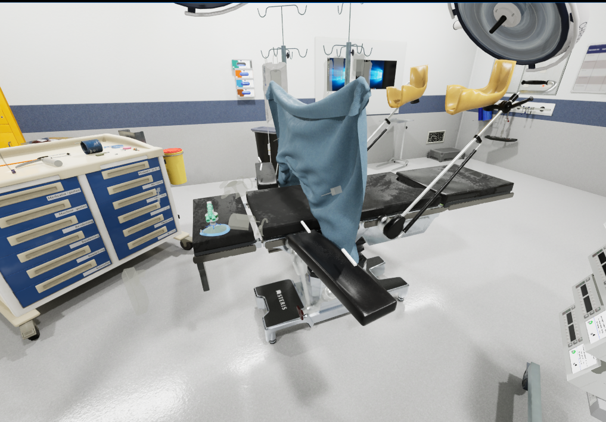
Nieuwe Operatie tafel
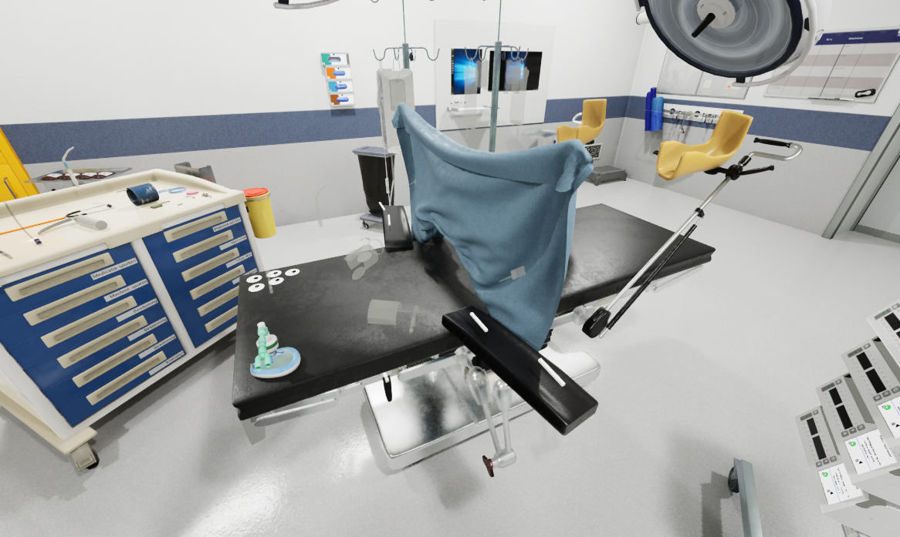
Oude Operatie tafel
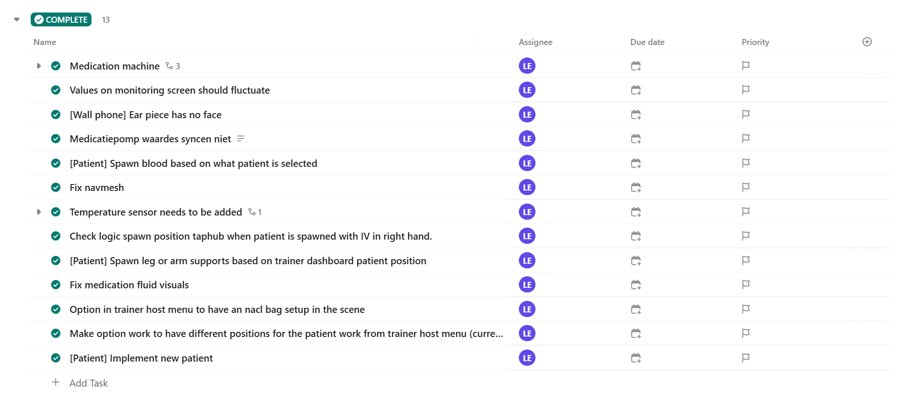
Clickup Taken 1
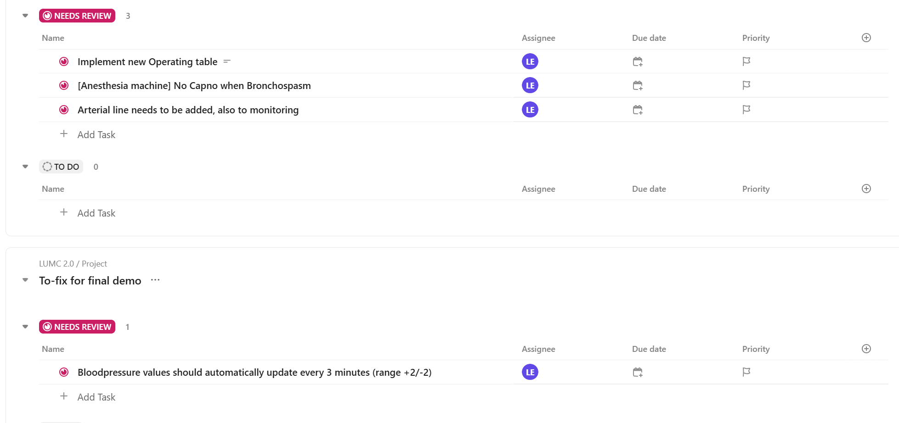
Clickup Taken 2
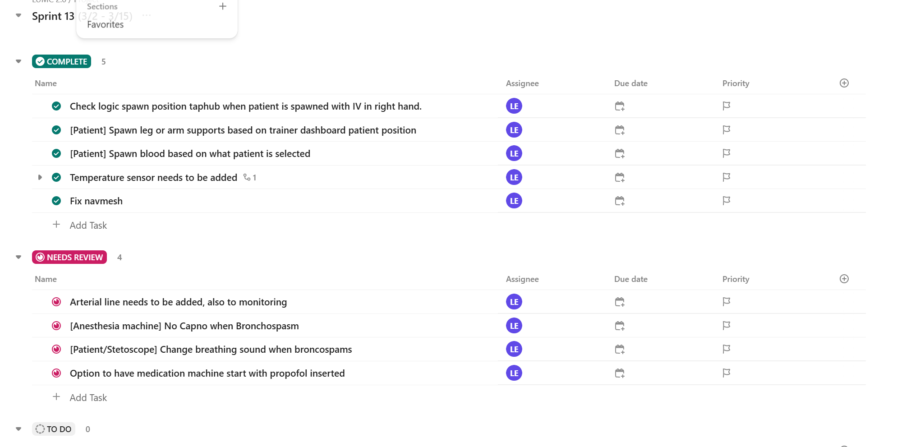
Clickup Taken 3
Video's
Foto's
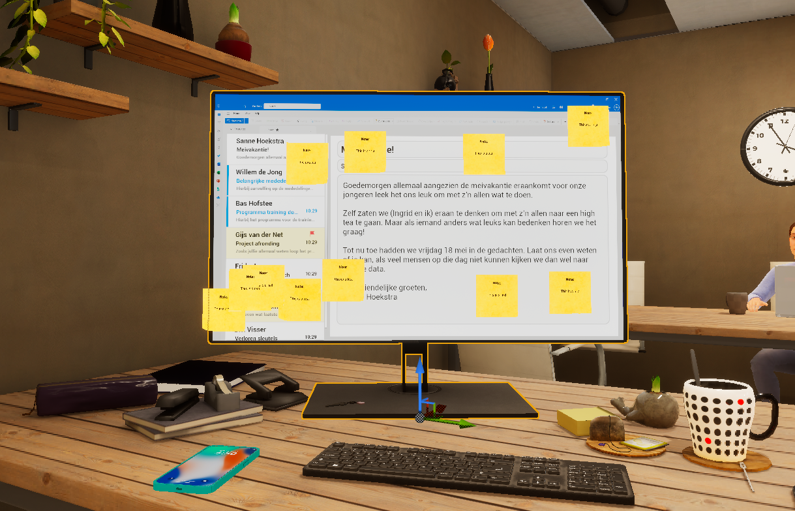
reintegration_photo1.png
Video's
Playthrough
Handschoenen prototype functionaliteit gebouwd
Quantum_video3.mp4
Foto's

2dgame_foto1.jpg

2dgame_foto2.jpg